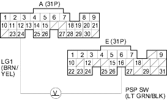
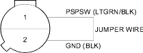

- Turn the ignition switch ON (II).
- Measure voltage between ECM/PCM connector terminals A24 and E16.

Is there less than 1.0 V?
YES |
- Go to step 3. |
NO |
- Go to step 6. |
- Start the engine.
- Turn the steering wheel to the full lock position.
- Measure voltage between ECM/PCM connector terminals A24 and E16.
Is there battery voltage?
YES |
- The PSP switch signal is OK. |
NO |
- Go to step 11. |

- Turn the ignition switch OFF.
- Disconnect the PSP switch 2P connector.
- Turn the ignition switch ON (II).
- At the harness side, connect the PSP switch 2P connector terminals No. 1 and No. 2 with a jumper wire.

- Measure voltage between ECM/PCM connector terminals A24 and E16.
Is there less than 1.0 V?
YES |
- Replace the PSP switch. |
NO |
- Check for these problems: |
- An open in the wire between the ECM/PCM (E16) and the PSP switch.
- An open in wire between the PSP switch and G201.
- Turn the ignition switch OFF.
- Disconnect the PSP switch 2P connector.
- Turn the ignition switch ON (II).